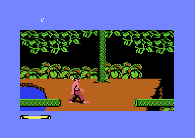
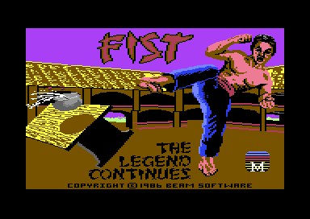

<meta charset="utf-8">
<meta name="viewport" content="width=device-width, initial-scale=1">
<title>Fist II: The Legend Continues</title>
<link rel="preconnect" href="https://fonts.googleapis.com">
<link rel="stylesheet" href="https://fonts.googleapis.com/css2?family=Lato:wght@400;700;900&family=IBM+Plex+Mono:wght@400;500&display=swap">
<link rel="stylesheet" href="reference/fist-page.css">
<!-- tabs -->
<header class="hero">
  <p class="eyebrow">Commodore 64 · 1986 · Beam Software</p>
  <h1>Fist II: The Legend Continues</h1>
  <p class="sub">The sequel to The Way of the Exploding Fist left the dojo: a lone fighter crosses a scrolling world of 123 screens (<code>$4A71</code>), gathering the eight scrolls of the masters' secrets (<code>$0405</code>), to grow strong enough to face the Warlord in his volcano.</p>
</header>
<main class="wrap">
  <section id="adventure">
    <p class="fig">01 · The adventure</p>
    <h2 class="t">Eight scrolls and a Warlord</h2>
    <p>A Warlord rules the land from a volcano, and the village elders send a young disciple of the Exploding Fist to defeat him. He cannot do it with what he knows: the masters of the Fist wrote their secrets on scrolls, hid them around the realm, and built meditation chambers where a warrior can learn them.<sup class="fn"><a href="about.html#src-1" title="The C64 manual">1</a></sup> The player walks through jungles, temples, caves and mountains, fights the Warlord's men one on one with the punches and kicks of the first game, and carries each of the eight scrolls to its own chamber. The scrolls are what let him advance: without them the way is shut (<code>$0405</code>). The first lets him smash the heaps of stone that block paths (<code>$0A59</code>), the second opens the way across to the river (<code>$36DE</code>), the fourth lets him kick down trees (<code>$0A44</code>), the sixth opens the exits of a screen further on (<code>$064C</code>), and without the third the road into the volcano drains his energy to nothing (<code>$0649</code>). Inside it the Warlord's last guards wait, one to a room (<code>$E609</code>), and the room beyond them ends the game (<code>$218C</code>).</p>
    <figure class="shot"><figcaption>Where the adventure begins: the jungle, screen 94 of 123. Captured in an emulator from the copy studied here.</figcaption></figure>
  </section>
  <section id="release">
    <p class="fig">02 · The release</p>
    <h2 class="t">Beam Software's sequel</h2>
    <p>Beam Software, a studio in Melbourne, made games for Melbourne House from the early 1980s. Its Commodore 64 games include the adventures <i>The Hobbit</i> and <i>Sherlock</i>, Gregg Barnett's first fighting game <i>The Way of the Exploding Fist</i> (1985), <i>Rock'n Wrestle</i> (1986), <i>Shadows of Mordor</i> (1987) and <i>Samurai Warrior: The Battles of Usagi Yojimbo</i> (1988).<sup class="fn"><a href="about.html#src-6" title="Wikipedia, Beam Software">6</a></sup></p>
    <p>Barnett, Beam's Commodore expert,<sup class="fn"><a href="about.html#src-15" title="Helen Stuckey, PhD thesis, 2016">15</a></sup> had joined the studio in 1982,<sup class="fn"><a href="about.html#src-13" title="Interview with Gregg Barnett, Tsumea">13</a></sup> and his <i>Exploding Fist</i> had topped the UK chart for twelve weeks in 1985.<sup class="fn"><a href="about.html#src-11" title="Super Chart Island, The Way of the Exploding Fist">11</a></sup> For the sequel, he later told Retro Gamer, "it would have been easy to just reskin the original game ... change locations and dojos, add new opponents".<sup class="fn"><a href="about.html#src-10" title="Super Chart Island, Fist II">10</a></sup> Nigel Spencer, who programmed for Melbourne House from 1985, describes what was made instead: "the Exploding Fist fighting engine combined with a platform game".<sup class="fn"><a href="about.html#src-12" title="Interview with Nigel Spencer, C64.com">12</a></sup></p>
    <p>Beam Software made the game in 1986. Melbourne House published it in Britain as <i>Fist II: The Legend Continues</i>, and Mindscape in the United States as <i>Fist: The Legend Continues</i>.<sup class="fn"><a href="about.html#src-7" title="archive.org, Lemon64 and the Finnish Retro Game Comparison Blog">7</a></sup></p>
    <p>The manual credits Barnett with the game design and programming, Greg Holland with the backgrounds and scenery, Russel Comte with the character animations and sprites, Nigel Spence, Trevor Nuridin and Bruce Bayley with the "graphic arrangements", Neil Brennan with the music and Bruce Bayley with the sound effects. The backgrounds were drawn with David Johnston's "Character Editor" and laid out with Nigel Spencer's "Map Editor".<sup class="fn"><a href="about.html#src-1" title="The C64 manual">1</a></sup></p>
    <figure class="shot"><figcaption>The loading picture, on screen while the Adventure loads from the Mindscape disk.</figcaption></figure>
  </section>
  <section id="reception">
    <p class="fig">03 · The reception</p>
    <h2 class="t">One week at number one</h2>
    <p>Fist II reached number one on the UK's combined formats chart for the week ending 18 October 1986, and stayed there one week.<sup class="fn"><a href="about.html#src-10" title="Super Chart Island, Fist II">10</a></sup> Commodore User's Ken McMahon expected it to be "the definitive Kung Fu classic" (November 1986), and Your Commodore found that "the idea of a quest rather than just straight combat works very well indeed" (January 1987). Zzap!64 was harder on it in December 1986: Julian Rignall thought it "looks unfinished and is completely overpriced", and Gary Penn called it "basically a big disappointment".<sup class="fn"><a href="about.html#src-10" title="Super Chart Island, Fist II">10</a></sup></p>
  </section>
  <section id="explore">
    <p class="fig">04 · Inside the game</p>
    <h2 class="t">Explore how Fist II works</h2>
    <p>Each tab takes one part of the game apart, from the game's own code.</p>
    <ul>
      <li><a href="gameplay.html"><b>Gameplay</b></a>: the controls, the energy bar, the eight scrolls and the opponents, and how a blow is judged to land (<code>$379C</code>).</li>
      <li><a href="levels.html"><b>Maps</b></a>: all 123 screens drawn from the game's data, and how they connect (<code>$4AEC</code>).</li>
      <li><a href="solution.html"><b>Solution</b></a>: what each scroll opens, what stands in the way of the volcano, and a route there one scroll at a time.</li>
      <li><a href="graphics.html"><b>Graphics</b></a>: every fighter in all 73 poses, the one body they share, and how each room is built from shapes and lists (<code>$1556</code>).</li>
      <li><a href="music.html"><b>Music</b></a>: the three tunes, playable through the game's own music driver (<code>$1247</code>), and the sampled sound effects.</li>
      <li><a href="discoveries.html"><b>Discoveries</b></a>: secrets, a bug, a trapdoor, the places where the manual and the code disagree, and graphics nothing uses.</li>
      <li><a href="source.html"><b>Source code</b></a>: the whole game disassembled and annotated.</li>
    </ul>
  </section>
</main>
